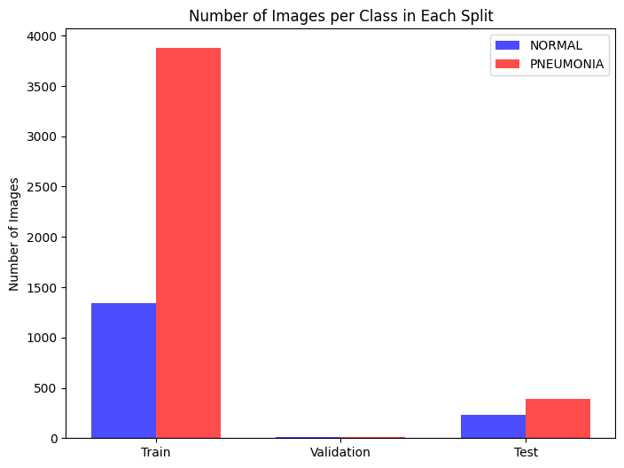

from pathlib import Path
path = Path("/path_to_dataset")Pneumonia Detection with CNN
AI
Deep Learning
PyTorch
Healthcare
Introduction
Pneumonia is a serious lung infection that affects millions worldwide. Early and accurate detection is crucial for effective treatment, but traditional diagnosis through X-rays requires expertise and time.
In this project, we leverage deep learning and Convolutional Neural Networks (CNNs) to automate pneumonia detection from chest X-ray images.
Getting started
Redefining the dataset
The dataset available on kaggle is not ideal in terms of how the splits are created: it contains 5856 images, but the validation set only contains 16 images.
I usually prefer to work with a more even dataset, so I decided to resplit the original dataset making the split to follow the 70:20:10 ratio and balancing the samples across the splits since the dataset has 4273 ‘PNEUMONIA’ images and 1583 ‘NORMAL’ images (so it’s not even).

Note : the choice of train:validation:test split must take into consideration that with fewer training samples the parameters learned within the model will have a greater variance, but with less testing data the performance statistics of the model will have the same problem.
import os
import shutil
import random
# ratios
TRAIN_RATIO = 0.7
VAL_RATIO = 0.2
# new directory
new_dir = path / "new_chest_xray"
classes = ["NORMAL", "PNEUMONIA"]
# creating new folders for each split and class
for split in ["train", "val", "test"]:
for cls in classes:
(new_dir / split / cls).mkdir(parents=True, exist_ok=True)
# exist_ok=True to prevent raising of error due to already existing path
# parents=True to create any necessary parent path if needed
# original directories that contain images
directories = [
path/"chest_xray"/"train",
path/"chest_xray"/"val",
path/"chest_xray"/"test"
]
random.seed(42)
for cls in classes:
images = []
for dir in directories:
cls_dir = dir / cls
images.extend(list(cls_dir.glob("*.jpeg")))
print(f"Found {len(images)} images for class {cls}")
random.shuffle(images)
total = len(images)
train_count = int(total * TRAIN_RATIO)
val_count = int(total * VAL_RATIO)
test_count = total - train_count - val_count
print(f"Splitting {cls}: train {train_count}, val {val_count}, test {test_count}")
# copying files into new folder
for i, img_path in enumerate(images):
if i < train_count:
dest = new_dir / "train" / cls / img_path.name
elif i < train_count + val_count:
dest = new_dir / "val" / cls / img_path.name
else:
dest = new_dir / "test" / cls / img_path.name
shutil.copy(str(img_path), str(dest))Found 1583 images for class NORMAL
Splitting NORMAL: train 1108, val 316, test 159
Found 4273 images for class PNEUMONIA
Splitting PNEUMONIA: train 2991, val 854, test 428This is what the new dataset looks like:
Defining directories for each split:
train_dir = new_dir / "train"
val_dir = new_dir / "val"
test_dir = new_dir / "test"Taking a look at the samples
Now we’ll see what’s inside the dataset:
from PIL import Image
random.seed(10) # usually 42, but choosing 10 because of better looking images :)
train_normal_path = train_dir / "NORMAL"
train_pneu_path = train_dir / "PNEUMONIA"
ims_train_normal_path = list(train_normal_path.glob("*.jpeg"))
ims_train_pneu_path = list(train_pneu_path.glob("*.jpeg"))
random_normal_path = random.choice(ims_train_normal_path)
random_pneu_path = random.choice(ims_train_pneu_path)
img_random_normal = Image.open(random_normal_path)
img_random_pneu = Image.open(random_pneu_path)
import matplotlib.pyplot as plt
plt.figure(figsize=(10, 7))
plt.subplot(1, 2, 1)
plt.title("Normal")
plt.imshow(img_random_normal, cmap='grey')
plt.axis(False)
plt.subplot(1, 2, 2)
plt.title("Pneumonia")
plt.imshow(img_random_pneu, cmap='grey')
plt.axis(False)Manipulating the data
1. Creating DataSets
This snippet of code creates the datasets using ImageFolder: we are associating the image with its label by looking at the name of the image (assigning images to ‘NORMAL’ or ‘PNEUMONIA’ class).
We are applying data augmentation on the training data, but not on validation and testing data to make sure the predictions are done on unaltered, real data, especially when dealing with medical images.
# creating datasets using ImageFolder
from torchvision import datasets, transforms
data_transform_training = transforms.Compose([
transforms.Resize((512, 512)),
transforms.RandomRotation(degrees=5), # introducing small random rotations
transforms.RandomApply([transforms.ColorJitter(brightness=0.05, contrast=0.05)], p=0.5), # introducing small random brightness/contrast changes
transforms.ToTensor()
])
# choosing not to apply data augmentation
data_transform_testing = transforms.Compose([
transforms.Resize((512, 512)),
transforms.ToTensor()
])
train_data = datasets.ImageFolder(root=train_dir,
transform=data_transform_training)
val_data = datasets.ImageFolder(root=val_dir,
transform=data_transform_testing)
test_data = datasets.ImageFolder(root=test_dir,
transform=data_transform_testing)
print(f"Train data:\n{train_data}\nValidation data:\n{val_data}\nTest data:\n{test_data}")Train data:
Dataset ImageFolder
Number of datapoints: 4099
Root location: /Users/johnarackal/Desktop/Blog/posts/post_3/chest_xray/new_chest_xray/train
StandardTransform
Transform: Compose(
Resize(size=(512, 512), interpolation=bilinear, max_size=None, antialias=True)
RandomRotation(degrees=[-5.0, 5.0], interpolation=nearest, expand=False, fill=0)
RandomApply(
p=0.5
ColorJitter(brightness=(0.95, 1.05), contrast=(0.95, 1.05), saturation=None, hue=None)
)
ToTensor()
)
Validation data:
Dataset ImageFolder
Number of datapoints: 1170
Root location: /Users/johnarackal/Desktop/Blog/posts/post_3/chest_xray/new_chest_xray/val
StandardTransform
Transform: Compose(
Resize(size=(512, 512), interpolation=bilinear, max_size=None, antialias=True)
ToTensor()
)
Test data:
Dataset ImageFolder
Number of datapoints: 587
Root location: /Users/johnarackal/Desktop/Blog/posts/post_3/chest_xray/new_chest_xray/test
StandardTransform
Transform: Compose(
Resize(size=(512, 512), interpolation=bilinear, max_size=None, antialias=True)
ToTensor()
)# note how ImageFolder assignes indexes to classes (important since the model's predictions will be between 0 and 1)
class_dict = train_data.class_to_idx
class_dict{'NORMAL': 0, 'PNEUMONIA': 1}2. Creating DataLoaders
DataLoaders are iterable objects that make the data more suitable and efficient for model training (apply batching, shuffling):
# creating dataloaders from datasets
TRAIN_BATCH_SIZE = 64 # to make training a bit faster, still not losing accuracy
VAL_BATCH_SIZE = 32
TEST_BATCH_SIZE = 32 # focusing on accuracy
NUM_WORKERS = os.cpu_count()
from torch.utils.data import DataLoader
train_dataloader = DataLoader(dataset=train_data,
batch_size=TRAIN_BATCH_SIZE,
num_workers=NUM_WORKERS,
shuffle=True)
val_dataloader = DataLoader(dataset=val_data,
batch_size=VAL_BATCH_SIZE,
num_workers=NUM_WORKERS,
shuffle=True)
test_dataloader = DataLoader(dataset=test_data,
batch_size=TEST_BATCH_SIZE,
num_workers=NUM_WORKERS,
shuffle=True)Creating the Model
1. Defining the CNN architecture
This architecture is based on TinyVGG, with some modifications like the presence of Dropout Layers (to prevent overfitting) and a different numbers of layers:
import torch
from torch import nn
class Model_V0(nn.Module):
def __init__(self, input_shape: int, hidden_units: int, output_shape: int) -> None:
super().__init__()
self.CB_1 = nn.Sequential(
nn.Conv2d(in_channels=input_shape,
out_channels=hidden_units,
kernel_size=3,
stride=1,
padding=1),
nn.ReLU(),
nn.MaxPool2d(kernel_size=2,
stride=2),
nn.Dropout(0.25)
)
self.CB_2 = nn.Sequential(
nn.Conv2d(hidden_units,
hidden_units,
kernel_size=3,
padding=1),
nn.ReLU(),
nn.MaxPool2d(2),
nn.Dropout(0.25)
)
self.classifier = nn.Sequential(
nn.Flatten(),
nn.Linear(in_features=hidden_units*128*128,
out_features=output_shape)
)
def forward(self, x: torch.Tensor):
x = self.CB_1(x)
x = self.CB_2(x)
x = self.classifier(x)
return x2. Instantiating a model
device = "cuda" if torch.cuda.is_available() else "cpu"
torch.manual_seed(42)
model_0 = Model_V0(input_shape=3,
hidden_units=8,
output_shape=2).to(device)Let’s test the model on one random image from the training set before the training phase:
# testing before training
img_batch, label_batch = next(iter(train_dataloader)) # iterating through the batches - returns the first batch on the first call
img_single, label_single = img_batch[0].unsqueeze(dim=0), label_batch[0]
print(img_single.shape)
model_0.eval() # disables dropout for testing
with torch.inference_mode():
pred = model_0(img_single.to(device))
print(f"Logits: {pred}\n")
print(f"Output pred probabilities: {torch.softmax(pred, dim=1)}\n")
print(f"Output pred label:{torch.argmax(torch.softmax(pred, dim=1), dim=1)}\n")
print(f"Actual label:\n{label_single}")The model is basically random guessing between the two classes (51% and 49%).
Defining Key Functions
The following two functions (A and B) will be the basis for the model training and testing.
A - Defining Training Step
from typing import Tuple
def train_step(model: torch.nn.Module,
dataloader: torch.utils.data.DataLoader,
loss_fn: torch.nn.Module,
optimizer: torch.optim.Optimizer,
device: torch.device) -> Tuple[float, float]:
model.train()
train_loss, train_acc = 0, 0
for batch, (X, y) in enumerate(dataloader):
X, y = X.to(device), y.to(device)
train_logits = model(X)
loss = loss_fn(train_logits, y)
train_loss += loss.item()
optimizer.zero_grad()
loss.backward()
optimizer.step()
train_pred_labels = torch.argmax(torch.softmax(train_logits, dim=1), dim=1)
train_acc += (train_pred_labels == y).sum().item()/len(y)
# normalizing the values since they were calculated per batch
train_len = len(dataloader)
train_loss = train_loss / train_len
train_acc = train_acc / train_len * 100
return train_loss, train_accB - Defining Testing Step
def test_step(model:torch.nn.Module,
dataloader: torch.utils.data.DataLoader,
loss_fn: torch.nn.Module,
device: torch.device) -> Tuple[float, float]:
model.eval()
test_loss, test_acc = 0, 0
with torch.inference_mode():
for batch, (X, y) in enumerate(dataloader):
X, y = X.to(device), y.to(device)
test_pred_logits = model(X)
loss = loss_fn(test_pred_logits, y)
test_loss += loss.item()
test_pred_labels = test_pred_logits.argmax(dim=1)
test_acc += ((test_pred_labels == y).sum().item()/len(y))
test_len = len(dataloader)
test_loss = (test_loss / test_len)
test_acc = (test_acc / test_len) * 100
return test_loss, test_accTraining function
Combining A and B into a ‘train’ function:
from typing import Dict, List
def train(model: torch.nn.Module,
train_dataloader: torch.utils.data.DataLoader,
val_dataloader: torch.utils.data.DataLoader,
optimizer: torch.optim.Optimizer,
loss_fn: torch.nn.Module,
epochs: int,
device: torch.device) -> Dict[str, List[float]]:
# creating an empty dictionary
results = {"train_loss": [],
"train_acc": [],
"val_loss": [],
"val_acc": []
}
for epoch in range(epochs):
train_loss, train_acc = train_step(model=model,
dataloader=train_dataloader,
loss_fn=loss_fn,
optimizer=optimizer,
device=device)
val_loss, val_acc = test_step(model=model,
dataloader=val_dataloader,
loss_fn=loss_fn,
device=device)
print(
f"Epoch: {epoch+1}\n"
f"train_loss: {train_loss:.4f} | "
f"train_acc: {train_acc:.4f}\n"
f"val_loss: {val_loss:.4f} | "
f"val_acc: {val_acc:.4f}"
)
results["train_loss"].append(train_loss)
results["train_acc"].append(train_acc)
results["val_loss"].append(val_loss)
results["val_acc"].append(val_acc)
return resultsTraining the Model
We will now use the previous function to train the newly created model, while tracking training time:
torch.manual_seed(42)
torch.cuda.manual_seed(42)
NUM_EPOCHS = 5
loss_fn = nn.CrossEntropyLoss()
optimizer = torch.optim.Adam(params=model_0.parameters(), lr=0.001)
from timeit import default_timer as timer
start_time = timer()
model_0_results = train(model=model_0,
train_dataloader=train_dataloader,
val_dataloader=val_dataloader,
optimizer=optimizer,
loss_fn=loss_fn,
epochs=NUM_EPOCHS,
device=device)
end_time = timer()
print(f"Total training time: {end_time - start_time:.3f} seconds")Epoch: 1
train_loss: 0.5840 | train_acc: 78.2692
val_loss: 0.3147 | val_acc: 90.5968
Epoch: 2
train_loss: 0.1965 | train_acc: 92.8846
val_loss: 0.2766 | val_acc: 89.4426
Epoch: 3
train_loss: 0.1841 | train_acc: 92.9327
val_loss: 0.2066 | val_acc: 94.1911
Epoch: 4
train_loss: 0.1674 | train_acc: 93.6538
val_loss: 0.1680 | val_acc: 94.5289
Epoch: 5
train_loss: 0.1565 | train_acc: 93.8141
val_loss: 0.1676 | val_acc: 94.1441
Total training time: 616.281 seconds
It took the model 10 minutes and 16 seconds to finish the training phase.
Note : the model was trained on Google Colab using the free available GPU. Here I’m just reporting the results. Training the model locally (on CPU) would have taken significantly longer.
Plotting the Loss and Accuracy functions
# plotting loss of training and validation
plt.figure(figsize=(9, 6))
plt.plot(model_0_results["train_loss"], label="Training Loss", color='green')
plt.plot(model_0_results["val_loss"], label="Validation Loss", color='red')
plt.xlabel("Epochs")
plt.ylabel("Loss")
plt.title("Model Loss")
plt.legend()
plt.show()
# plotting accuracy of training and validation
plt.figure(figsize=(9, 6))
plt.plot(model_0_results["train_acc"], label="Training Accuracy", color='blue')
plt.plot(model_0_results["val_acc"], label="Validation Accuracy", color='orange')
plt.xlabel("Epochs")
plt.ylabel("Accuracy (%)")
plt.title("Model Accuracy")
plt.legend()
plt.show()Final Test
Let’s test the model on the test dataset to see how it performs on unseen images:
final_loss, final_acc = test_step(model_0,
test_dataloader,
loss_fn,
device)The accuracy reached by the model on the testing set was: 93.26 %.
random.seed(42)
# selecting 9 random test images
num_images = 9
random_test_samples = random.sample(test_data.imgs, num_images) # list of lists (file_path, label)
# .imgs is an attribute from ImageFolder
plt.figure(figsize=(12, 12))
model_0.eval()
for i, (img_path, label) in enumerate(random_test_samples):
# getting the original image
original_image = Image.open(img_path).convert("RGB") # converting to RGB to fit model's expected input size (3)
# apply transformation for model input
img_transformed = data_transform_testing(original_image).unsqueeze(0).to(device)
# get model prediction
with torch.inference_mode():
pred_logits = model_0(img_transformed)
pred_label_idx = torch.argmax(torch.softmax(pred_logits, dim=1), dim=1).item()
predicted_label = class_names[pred_label_idx]
# get actual label
actual_label = classses[label]
# title color (green if correct, red if incorrect)
title_color = "green" if actual_label == predicted_label else "red"
plt.subplot(3, 3, i + 1)
plt.imshow(original_image, cmap="gray") # returning to grayscale for visualization
plt.title(f"Actual: {actual_label}\nPred: {predicted_label}", color=title_color)
plt.axis(False)
plt.tight_layout()
plt.show()Conclusion
In this project, we explored the use of Convolutional Neural Networks (CNNs) for pneumonia detection from chest X-ray images. We started by rearranging the dataset, ensuring a balanced distribution of samples across training, validation, and test sets. We then built a custom CNN model inspired by TinyVGG, introducing dropout layers to reduce overfitting.
During training, our model demonstrated steady improvements in accuracy, achieving a final training accuracy of 93.81% and validation accuracy of 94.14%, reaching a final accuracy of 93.26% on the test set. The final test showed that the model generalizes well to unseen data.
We finally visualized random test samples, comparing the model’s predictions with ground truth labels.
While the model achieved fairly strong results, no extensive fine-tuning was performed beyond the initial design. Since the model already reached a good level of accuracy, I prioritized understanding the core machine learning concepts rather than spending excessive time optimizing hyperparameters.
Additionally, some machine/non-machine learning-specific parts of the code (such as plotting functions and certain helper functions) were AI-generated (or based on AI-generated code). These elements were included to enhance the presentation of the post rather than to focus on implementation details that were not central to my learning objectives.
Potential improvements could be made by:
- Fine-tuning the model and tracking model training.
- Implementing more advanced architectures like ResNet or EfficientNet.
Links
License
MIT License
MIT License
Copyright (c) 2021 Daniel Bourke
Permission is hereby granted, free of charge, to any person obtaining a copy of this software and associated documentation files (the “Software”), to deal in the Software without restriction, including without limitation the rights to use, copy, modify, merge, publish, distribute, sublicense, and/or sell copies of the Software, and to permit persons to whom the Software is furnished to do so, subject to the following conditions:
The above copyright notice and this permission notice shall be included in all copies or substantial portions of the Software.
THE SOFTWARE IS PROVIDED “AS IS”, WITHOUT WARRANTY OF ANY KIND, EXPRESS OR IMPLIED, INCLUDING BUT NOT LIMITED TO THE WARRANTIES OF MERCHANTABILITY, FITNESS FOR A PARTICULAR PURPOSE AND NONINFRINGEMENT. IN NO EVENT SHALL THE AUTHORS OR COPYRIGHT HOLDERS BE LIABLE FOR ANY CLAIM, DAMAGES OR OTHER LIABILITY, WHETHER IN AN ACTION OF CONTRACT, TORT OR OTHERWISE, ARISING FROM, OUT OF OR IN CONNECTION WITH THE SOFTWARE OR THE USE OR OTHER DEALINGS IN THE SOFTWARE.